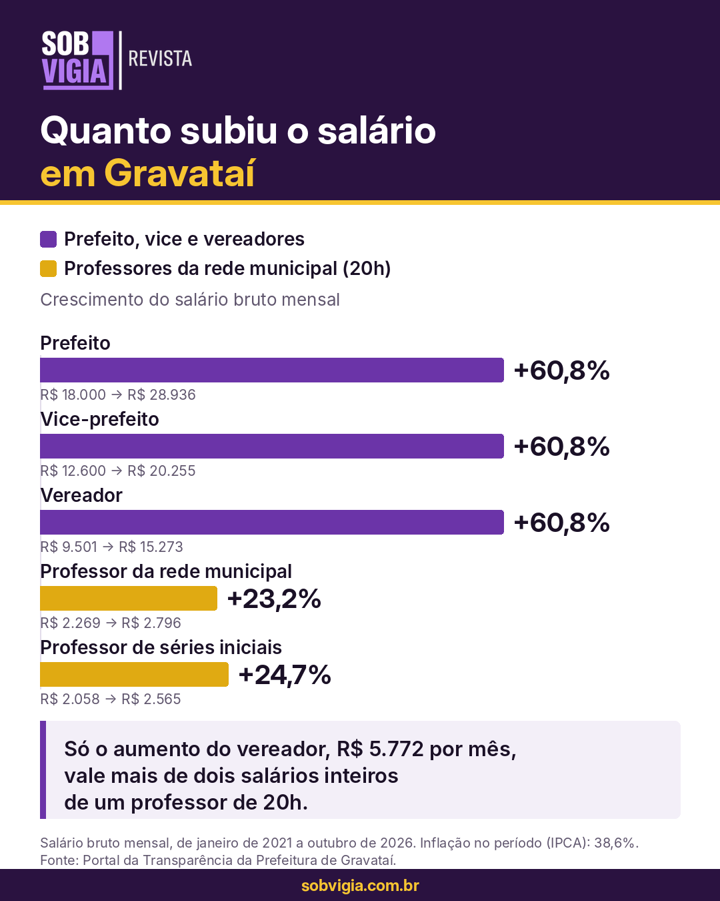

Gravataí · Educação
Salário de prefeito, vice e vereadores em Gravataí subiu 61%. O de professor, 24%.
Prefeito, vice e vereadores tiveram o mesmo reajuste no período. Só o aumento mensal de um vereador vale mais de dois salários inteiros de um professor de 20 horas da rede municipal.
Redação
16 DE NOV DE 2026, 09:16
O salário de um vereador de Gravataí passou de R$ 9.500,64 em janeiro de 2021 para R$ 15.272,83 em outubro de 2026, um aumento de 60,8%. No mesmo período, o salário de um professor de 20 horas da rede municipal subiu cerca de 24%: de R$ 2.057,72 para R$ 2.565,32 nas séries iniciais, e de R$ 2.269,18 para R$ 2.796,24 em outro cargo de 20 horas. Os valores são brutos e foram levantados pelo Sob Vigia no Portal da Transparência da Prefeitura de Gravataí.
O reajuste foi o mesmo para todos os cargos políticos. O salário do prefeito foi de R$ 18.000 para R$ 28.936,07, e o do vice-prefeito, de R$ 12.600,00 para R$ 20.255,24: os dois também subiram 60,8%.
Entre os professores, um docente de séries iniciais com jornada de 20 horas passou de R$ 2.057,72 em janeiro de 2021 para R$ 2.565,32 em outubro de 2026, alta de 24,7%. Em outro cargo de professor da rede municipal, também com 20 horas, o salário foi de R$ 2.269,18 para R$ 2.796,24, alta de 23,2%.
A diferença em reais
Os percentuais não mostram tudo. Por mês, o salário de um vereador aumentou R$ 5.772,19. O de um professor de 20 horas aumentou cerca de R$ 508. Ou seja, só o aumento mensal do vereador vale mais de dois salários inteiros de um professor, e é 11 vezes maior que o aumento do docente.
A distância entre os cargos também cresceu. Em 2021, um vereador ganhava 4,6 vezes o salário de um professor de 20 horas; hoje ganha seis vezes. O prefeito passou de 8,8 para 11,3 vezes. Mesmo um professor com jornada de 40 horas, que recebe o dobro, ganha hoje cerca de um terço do salário de um vereador.
A diferença fica ainda maior quando se desconta a inflação. Pelo IPCA, a inflação oficial medida pelo IBGE, os preços subiram 38,6% entre janeiro de 2021 e outubro de 2026. Com isso, prefeito, vice e vereadores tiveram ganho real de 16%: o vereador recebe hoje R$ 2.105 por mês acima do que seria só a reposição da inflação. Os professores tiveram o caminho inverso e perderam entre 10% e 11% do poder de compra. Para apenas repor a inflação, o professor de séries iniciais precisaria ganhar R$ 2.851,90; ganha R$ 2.565,32, ou seja, R$ 287 a menos por mês.
Quem aprovou
Os salários de prefeito, vice, secretários e vereadores para o mandato 2025–2028 foram fixados pela própria Câmara no Projeto de Lei 12/2024. Os valores dos vereadores também foram corrigidos por revisões anuais aprovadas pelos próprios vereadores, como os Projetos de Lei 139/2022, 189/2023, 86/2024 e 164/2025.
Os professores dependem de leis enviadas pela prefeitura. A atualização mais recente, de 2026 (Projeto de Lei do Executivo 26/2026), foi feita, segundo a própria justificativa, para pagar o piso nacional do magistério. Em 2020 e 2021, os reajustes de todos os servidores ficaram congelados pela Lei Complementar federal 173/2020, aprovada durante a pandemia.
Como fizemos o levantamento: os valores são o salário bruto mensal informado no Portal da Transparência da Prefeitura de Gravataí. Para os professores, usamos o salário de docentes de 20 horas semanais, que pode incluir adicionais pessoais. O salário líquido não foi comparado porque depende dos descontos de cada pessoa. A inflação foi calculada pelo IPCA (IBGE) na Calculadora do Cidadão do Banco Central, de janeiro de 2021 a outubro de 2026. Os salários dos professores eram os mesmos em janeiro e julho de 2021 e em julho e outubro de 2026.